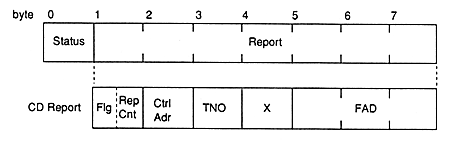
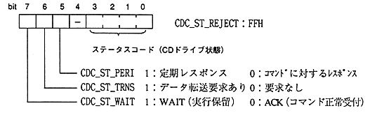

Title | Data | Data Name | No |


constant name | value | Status | Description |
|---|---|---|---|
CDC_ST_BUSY | 00H | 〈BUSY〉 | State transition in progress |
CDC_ST_PAUSE | 01H | 〈PAUSE〉 | Pause (pause) |
CDC_ST_STANDBY | 02H | 〈STANDBY〉 | Standby (drive stopped) |
CDC_ST_PLAY | 03H | 〈PLAY〉 | CD playing |
CDC_ST_SEEK | 04H | 〈SEEK〉 | Seeking |
CDC_ST_SCAN | 05H | 〈SCAN〉 | Replaying scan |
CDC_ST_OPEN | 06H | 〈OPEN〉 | Tray open |
CDC_ST_NODISC | 07H | 〈NODISC〉 | No disc |
CDC_ST_RETRY | 08H | 〈RETRY〉 | Read retry processing |
CDC_ST_ERROR | 09H | 〈ERROR〉 | A read data error has occurred |
CDC_ST_FATAL | 0AH | 〈FATAL〉 | Fatal error has occurred |